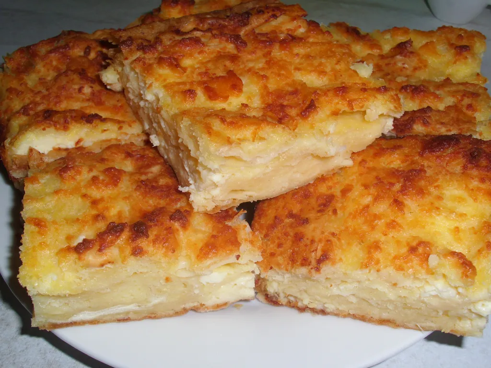

Gibanica
Go Home

Gibanica (pronounced ghee-bun-eetsa) is a traditional, beloved Balkan pastry,
especially popular in Serbia, made from layers of phyllo dough, a rich mixture of cheese (like feta or sirene),
eggs, and often yogurt or sour cream, creating a savory pie that's crispy on the outside and juicy/creamy inside, served hot or cold for any occasion.
Ingredients
- Phyllo dough
- Feta cheese
- Eggs
- Cottage cheese
- Sparkling water
- Milk
- Yogurt
- Oil
- Baking powder
- Salt
Steps
- Prepare the Filling & Pan
- Preheat Oven & Grease Pan: Set oven to 375-400°F (190-200°C) and generously butter or oil a 9x13 inch pan.
- Mix Filling: In a bowl, whisk eggs, then mix in crumbled feta, cottage cheese, a liquid (yogurt, milk, or sparkling water), oil, salt, and baking powder (if using).
- Prepare Brushing Liquid: Combine oil with a little water or sparkling water for brushing layers.
- Layer the Dough & Filling
- Base Layers: Place 2-3 phyllo sheets flat in the pan, letting them overhang the sides. Brush with oil/water mix.
- Add Filling: Dollop or spread some cheese mixture over the phyllo. Drizzle with butter/oil.
- Crumple & Repeat: Take a phyllo sheet, crumple it loosely, dip it in the cheese mixture, squeeze out excess, and place it in the pan. Repeat until the filling is used, creating a puffy, layered texture.
- Top Layers: Place 2-3 final sheets on top, tucking in the edges, and brush generously with butter/oil or the egg/sour cream wash.
- Bake & Serve
- Bake: Bake for 40-60 minutes until puffed, bubbly, and deep golden brown. (Cover with foil if browning too fast).
- Cool: Let it rest for 10-15 minutes before slicing into squares.
- Serve: Enjoy warm, often with yogurt or kefir.